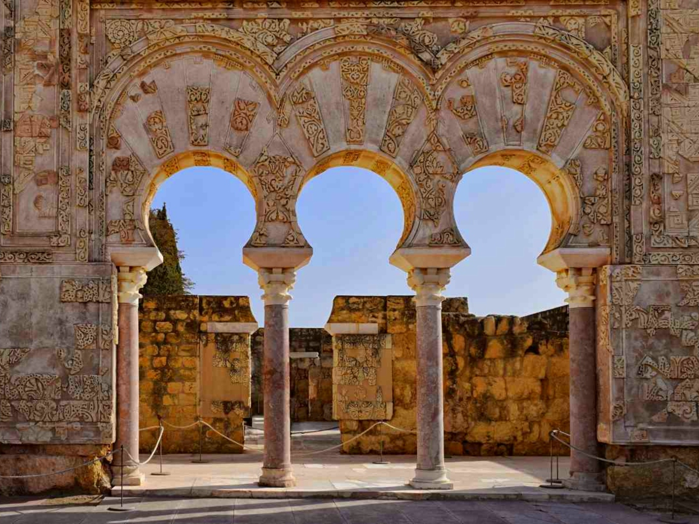
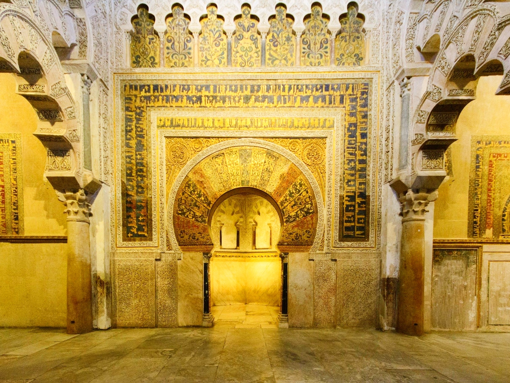
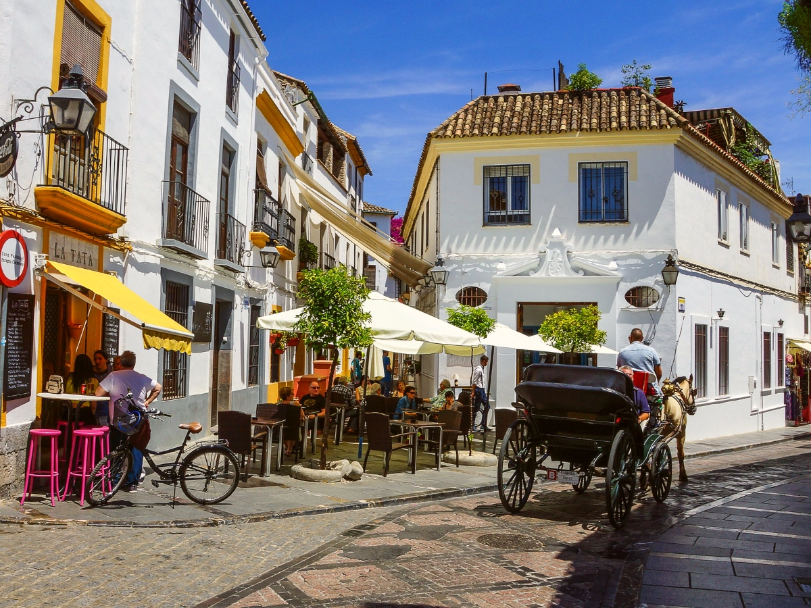
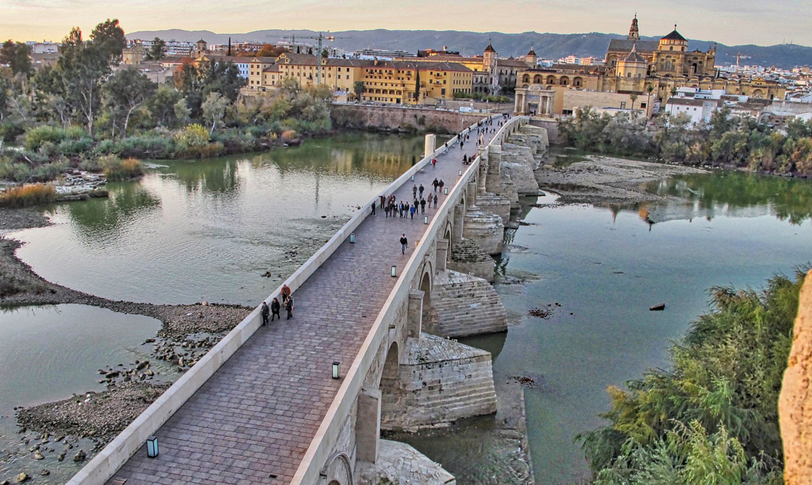
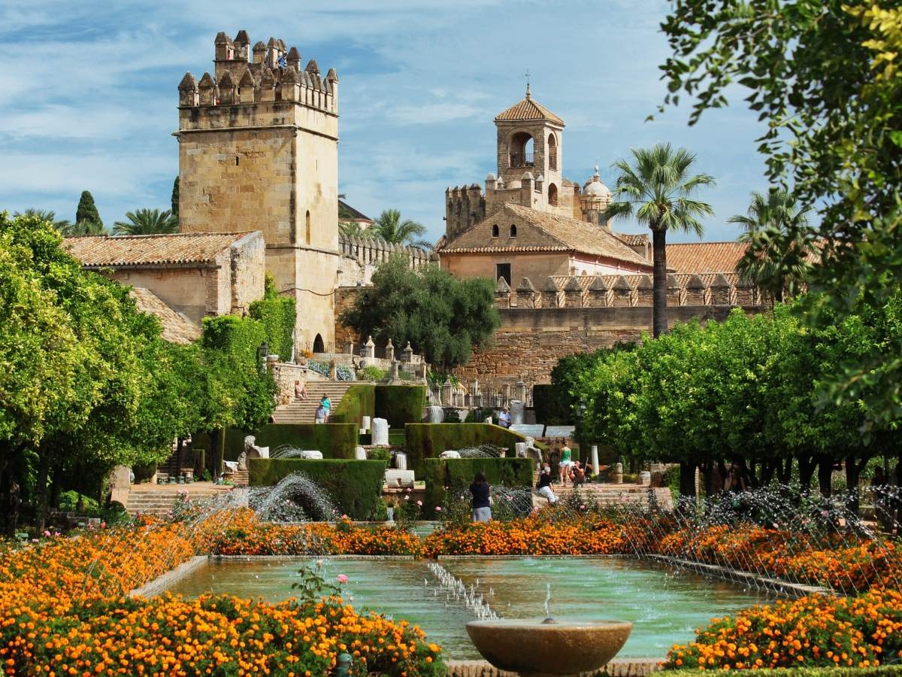
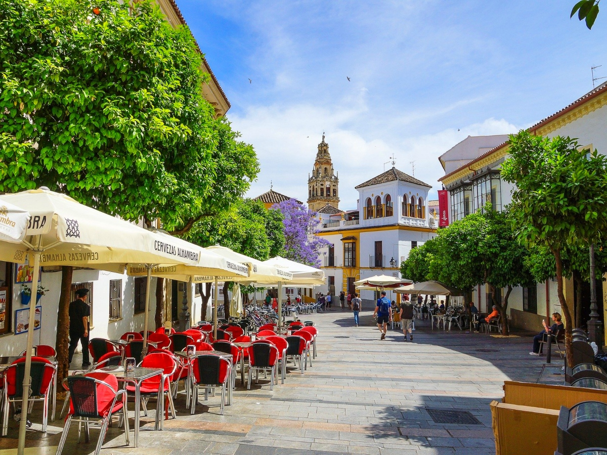

In the tenth century Córdoba was the largest city in Europe.
Around half a million people, street lighting, running water and a library holding hundreds of thousands of books, at a time when Paris was a town of mud. Then all of it disappeared. That history is what makes Córdoba worth a day.
It is also the easiest day trip from Seville. The high-speed train covers the 140 km in forty-five minutes, and the old town is compact enough to walk end to end, so almost none of the day is lost to getting there.
In short
- —45 minutes each way on the AVE from Seville Santa Justa — the fastest day trip in Andalucía.
- —The Mezquita holds 856 columns and a Renaissance cathedral built into its centre.
- —One day is genuinely enough for the Mezquita, the Judería, the Roman bridge and the Alcázar.
- —Avoid July and August: Córdoba is the hottest city in Spain and regularly passes 40 °C.
01
The history first: why Córdoba?
In 756 a young prince arrived from Damascus, on the run. His family had been wiped out by the Abbasids. His name was Abd al-Rahman, and he founded an emirate in Al-Andalus that broke away from the caliphate in the east.
Over the following two centuries Córdoba grew into the intellectual centre of the West. Averroes worked here, whose commentaries on Aristotle shaped European philosophy for centuries through their Latin translations. So did Maimonides, the most important Jewish thinker of the Middle Ages.
Ferdinand III took the city in 1236. By then the caliphate had already collapsed into civil war and Córdoba was a shadow of itself. It never grew large again, which is precisely why so much of it survives.

02
The Mezquita-Cathedral
856 columns under horseshoe arches, banded in alternating red and white stone, in rows that run further than the eye follows. Built as a mosque from 785, extended three times, and in the sixteenth century given a Renaissance cathedral constructed directly into its middle.
When Charles V saw the result he is said to have remarked that they had destroyed something unique to build something you can find anywhere. Yet it was the cathedral that saved the building from being lost altogether.
Buy the ticket online at mezquita-catedraldecordoba.es and arrive just after opening — that is when the column hall is closest to empty. There is free entry between 08.30 and 09.30 on weekdays, but mass is being said, you cannot move around freely, and the queue takes back the time you saved.

03
The Judería
A web of white streets immediately north of the Mezquita, holding the small synagogue of 1315 — one of only three surviving from medieval Spain.
Calleja de las Flores is the most photographed street in the city: narrow enough to touch both walls with your arms out, with the Mezquita tower framed at the end of it. Come before ten if you want it to yourself.

04
The Roman bridge
Built in the first century BC across the Guadalquivir and in use for two thousand years since. From the middle of it you see the Mezquita side-on, which is the best view of the city there is. Walk across to the Calahorra tower on the far bank.

05
Alcázar de los Reyes Cristianos
The fortress where Isabella and Ferdinand held court, and where Columbus was granted his first audience in 1486. The gardens, with their long pools and orange trees, are finer than the building.

06
The patios
Córdoba is known for its inner courtyards, covered floor to roof in potted plants. For two weeks in the first half of May private houses open their patios to the public in a competition, and the whole city smells of flowers. Book everything early if you travel then.
Outside May, the Palacio de Viana is the place to go — twelve patios inside one building.

07
Salmorejo, not gazpacho
Córdoba's own cold soup: tomato, bread, olive oil and garlic, thicker and milder than gazpacho, served with chopped egg and ham on top. Order it, then order flamenquín after — a roll of pork and ham, breaded and fried. Rabo de toro, oxtail stew, is the winter dish, and berenjenas fritas are aubergines fried and drizzled with cane honey.
The wine is Montilla-Moriles, made in the same way as sherry but without fortification. Ask for a fino and you get something dry and nutty. Mercado Victoria, in an iron hall of 1877 beside the old town, is the easy place to try several things at once.
Getting there, and getting in
The AVE high-speed train leaves Seville Santa Justa several times an hour through the morning and afternoon and takes forty-five minutes; tickets are on renfe.com. From Córdoba station it is a twenty-minute walk to the Mezquita, or a short ride on bus 3. The coach takes an hour and three quarters and costs less, but the train buys you so much more of the day that it is rarely worth it. By car it is an hour and a half on the A-4.
Once you are in the old town everything is walkable. The Mezquita, the Judería, the Roman bridge and the Alcázar sit within about forty-five minutes' walk of each other, and each takes roughly an hour.
If you would rather not organise trains, tickets and a guide separately, we arrange Córdoba privately from Seville, tailored to how much walking and how long a lunch you want. Medina Azahara, the caliph's ruined palace city eight kilometres outside town, is the usual reason to add a second half-day.
Mistakes worth avoiding
- —Coming in July or August. Over 40 °C and empty streets — April, May and October are the good months.
- —Using the free hour at the Mezquita. Mass is on, you cannot walk around, and the queue costs you the hour you saved.
- —Seeing only the Mezquita. The Judería, the Roman bridge and the Alcázar are minutes away and take about an hour each.
- —Travelling in May without booking. The patio festival fills the city.
- —Taking the coach to save money. You lose two hours of the day.
Frequently asked questions
{{ f.q }}+
{{ f.a }}

Written by
Gunvor Guttormsen
Licensed tour guide · Seville
Gunvor is an officially licensed guide based in Seville and the founder of Flavors of Andalucia. She guides in English and Norwegian, and also in Swedish and Danish, and has spent years walking the markets, bodegas and back streets she writes about here.
More about Gunvor